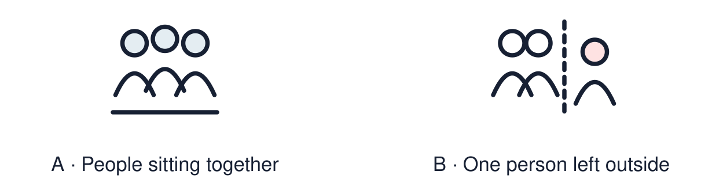

Arrival choices
Previous lesson reminder:

Start with 1 and 2. Try 3 and 4 when ready. Reading and exact scribing are available.
1 Where is a Torah scroll kept in a synagogue?
Support: Use the reminder strip or talk it through with an adult.
2 Which meaning fits belonging?
Support: Choose: Feeling part of a group and welcome in it OR People linked by a place, belief or activity.
3 What is one sign that Sam is welcome at the gurdwara?
Support: Use the model evidence anchor B or read one relevant card together.
4 Did anyone ask Sam what he believes before welcoming him?
Support: Give a reason when ready.
Stretch: use a precise example or explain which detail supports your answer.
Evidence cards
Read, point or listen. Keep the source label with any detail you use.
A The visit
Fictional story: Sam visits a gurdwara with his friend Jas. A gurdwara is a Sikh place of worship. They follow the host’s guidance about covering their heads and removing shoes.
Source: Authored story based on Sikh practice
Limit: One story cannot show every gurdwara or every Sikh family.
B The welcome
A volunteer smiles and says hello. She shows Sam where to sit. Nobody asks what Sam believes. Everyone is welcome.
Source: Authored story based on Sikh practice
Limit: One story cannot show every gurdwara or every Sikh family.
C The shared meal
The visitors share langar, a free community meal. Many people sit on the floor together as a sign of equality. Chairs or other arrangements can support people who need them.
Source: Authored story based on Sikh practice
Limit: One story cannot show every gurdwara or every Sikh family.
D Joining in
Sam chooses to help carry cups after the meal. Jas thanks him. The welcome and shared meal helped him feel included; helping is a choice, not a condition of belonging.
Source: Authored story based on Sikh practice
Limit: Belonging can feel different for different people.
Shared investigation
1. Put the four parts of Sam’s visit in order.
2. Find one thing in the story that shows belonging.
Work with a partner or adult, or use your own table. One person suggests; the other checks the evidence. Swap after one turn. Passing is allowed.
Move or match the cards
| Cards to use |
|---|
| Sam helps carry cups to the kitchen |
| Everyone sits together to eat langar |
| A volunteer welcomes Sam and shows him where to sit |
| Sam takes off his shoes and covers his head |
Support: Show two choices. Read one short instruction. Point, match or say a word, then add a reason when ready.
Further challenge: Explain why sitting together to eat can show that people are equal.
Supported independent task
Complete this route only. Listen to a story of belonging and identify one example of belonging.
1. Put three story pictures in order.
2. Point to the picture that shows a welcome.
3. Say or finish: They belong because ___.
Support: Show two choices. Read one short instruction. Point, match or say a word, then add a reason when ready. Complete the organiser one space at a time. They belong because ___.
An adult may read or scribe your exact response. They should not choose the answer.
Standard independent task
Complete this route only. Listen to a story of belonging and identify one example of belonging.
1. Put the four story parts in order.
2. Choose one example of belonging from the story.
3. Finish the sentence: They belong because ___.
Support: They belong because ___.
Check the required evidence and revise one detail.
Stretch independent task
Complete this route only. Listen to a story of belonging and identify one example of belonging.
1. Put the four story parts in order.
2. Explain two different signs of belonging in the story.
3. Say what the shared meal teaches about equality.
Support: Choose the evidence independently. Use the frame only if it helps.
Explain why sitting together to eat can show that people are equal.
Exit ticket
Choose a response mode. You may give your answers privately to an adult.
What is one sign that Sam is welcome at the gurdwara?
Did anyone ask Sam what he believes before welcoming him?
Support: They belong because ___.
Further challenge: Explain why sitting together to eat can show that people are equal.